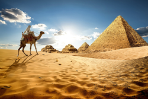

Sibonisiwe Angelique
Sodinga
Which City

Egypt
Egypt is known for its rich history and interesting culture. Most Ancient Egyptian pyramids were built as tombs for pharaohs (rulers of Ancient Egypt) and their families. To date, over 130 pyramids have been discovered in Egypt. The afterlife was incredibly important to the Egyptians. They believed that by preserving a dead person’s body – which they did through the process of mummification – their soul would live on in the after-life forever. Both Egyptian men and women wore make-up. The eye-paint was usually green (made from copper) or black (made from lead). As well as offering protection from the sun, the Egyptians believed make-up had magical healing powers, too!
Foreign Language
| English languange | Italian language |
|---|---|
| hello | Chioa |
| I love you so much | Ti amo tanto |
| where's my money | dove sono miei soldi |
Historical Places

Parliament of South Africa
- The predecessor of the Parliament of South Africa, before the 1910 was the bicameral Parliament of the Cape of Good Hope.
- This was composed of the House of Assembly and the Legislative Council.
- In 1910, the Parliament was bicameral and consisted of the King or the Queen, the Senate, and the House of Assembly.

Castle of Goodhope
- Castle of goodhope was built in the 17th century in Cape Town, South Africa.
- In 1936 the Castle was declared a historical monument.
- Built by the Dutch East India Company between 1666 and 1679, the Castle is the oldest existing building in South Africa.

Green Market Square
- The square dates back to 1696, the year when the first Burgher Watch House was built.
- Here one can buy everything from African curio, souvenirs and leatherwork to foods and African music
- Greenmarket Square lies between Long Street and St Georges Mall.